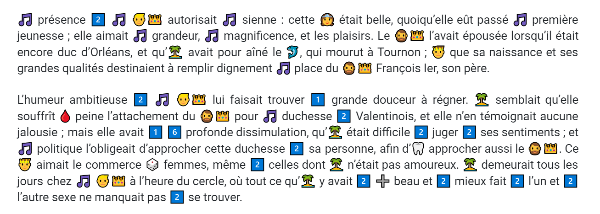
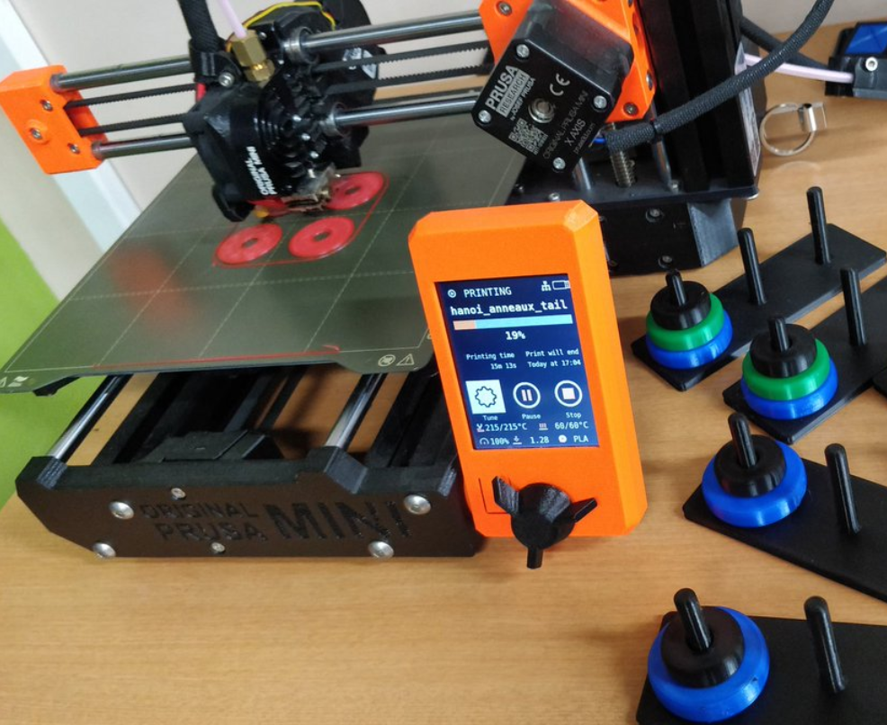
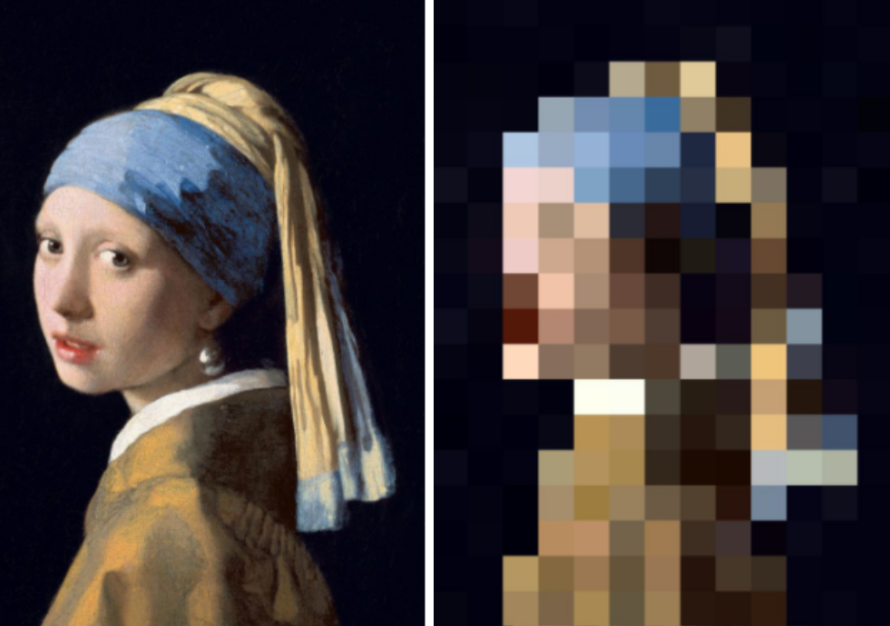
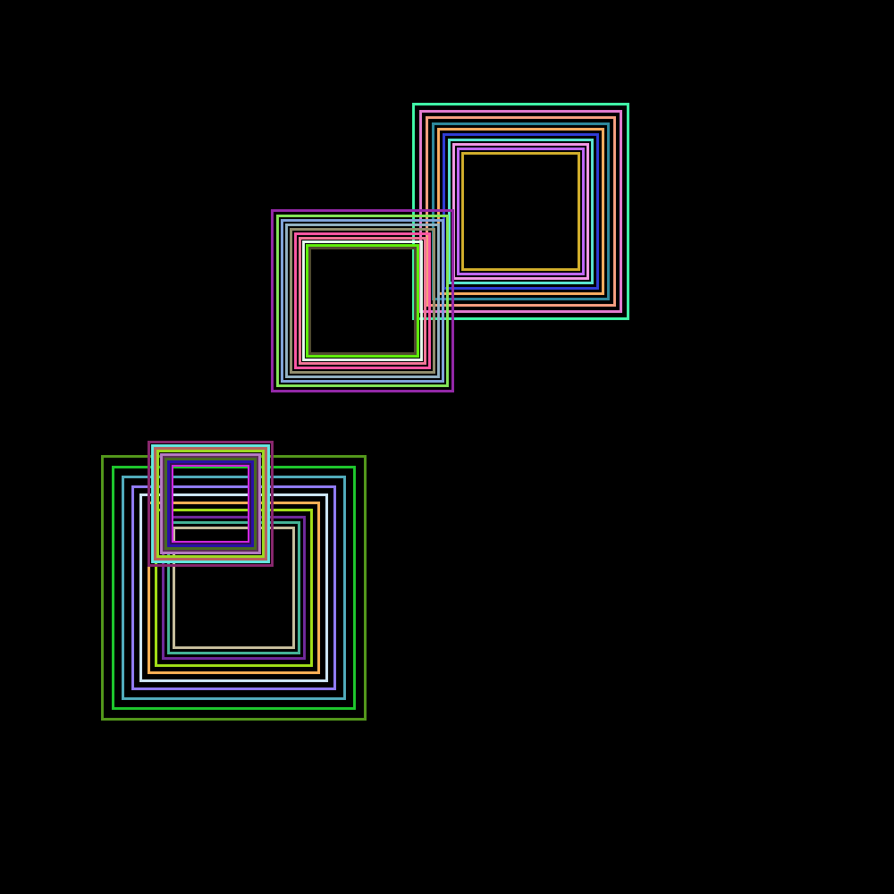
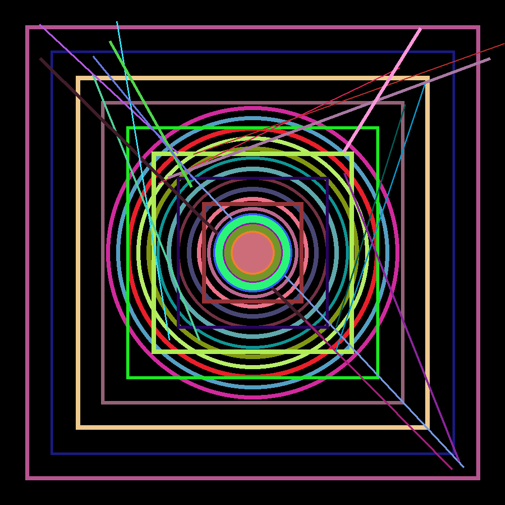
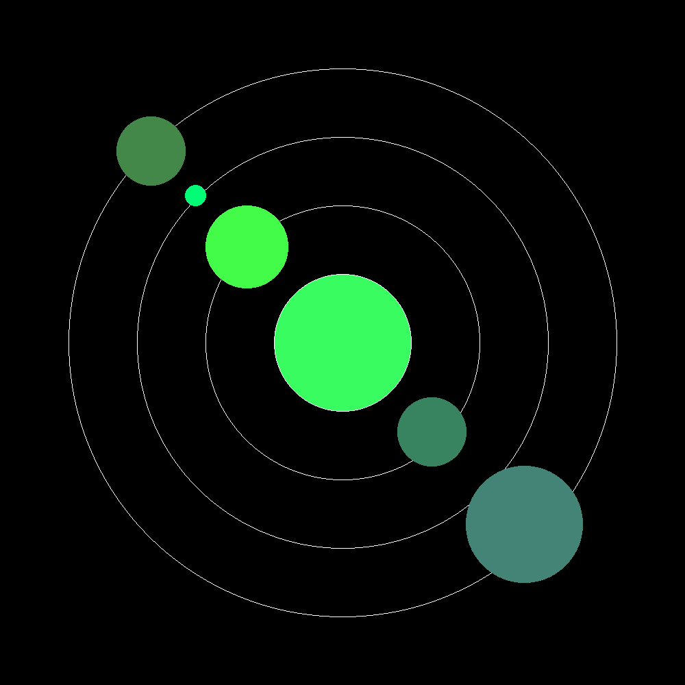
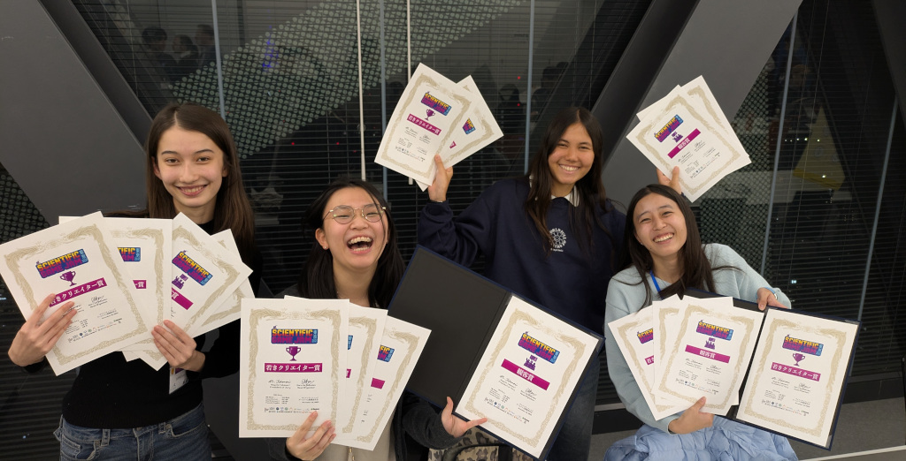
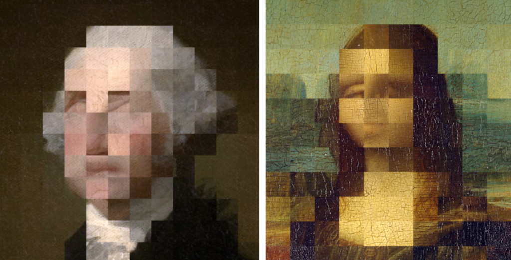

<br /> 🗨️ "Le renforcement des compétences numériques des élèves est aujourd'hui un impératif." <br /><small style="color:silver">Ministère de l'Éducation Nationale</small> <br /> 🗨️ "Ne pas maîtriser des compétences numériques de base constitue une situation handicapante dans la vie courante." <br /><small style="color:silver">*Illectronisme et illettrisme*, Elie Maroun</small> <br /> 🗨️ "Nowadays, *all* jobs need digital skills and competencies." <br /><small style="color:silver">Emilija Stojmenova Duh, AMNC23, World Economic Forum</small>
# NSI <div style="text-align:center;color:#e74c3c">NUMÉRIQUE et SCIENCES INFORMATIQUES</div> <br /> <br /> ⚡ Pas de prérequis en maths ou en programmation <br /> ⚡ SNT ≠ NSI <br /> ⚡ Pas de cours magistraux 🠊 projets et activités <br /> ⚡ Préparation aux études supérieures
## LÉGENDES URBAINES <br /> <br /> 💣 On peut apprendre l'informatique tout seul <span style="font-weight:bold;text-align:center;color:#e74c3c">FAUX!</span> <br /> <br /> <br /> 💣 L'IA le fera à votre place <span style="font-weight:bold;text-align:center;color:#e74c3c">FAUX!</span>
## 25 ~ 40% du temps pour les projets <center><b>2/4 élèves</b></center> * 🧪 simulation d'expérience * 🤖 robotique et objets connectés * 📱 application pour téléphone portable * 🕹️ création de jeu vidéo * 👩💻 développement de logiciels * 🖼️ traitement d'image ou de son * 🔗 développement de sites Web * 📊 traitement de données
## THÈMES & PROJETS <div style="text-align:center;text-transform: uppercase;"><small>Langages et programmation & Algorithmes</small></div> <br /> <table> <tr> <td style="width:30%;padding:0px 15px 0px 0px;text-align:center;vertical-align:top;font-size:18px;"> <div style="padding-bottom:40px">IA et classification</div> <img width="800" src="media/neuralnetwork.png" style="max-width:100%;width:100%;border-radius:5px;"> </td> <td style="width:28%;padding:0px 0px 0px 0px;text-align:center;vertical-align:top;font-size:18px;"> <div style="padding-bottom:18px">Jeux vidéo</div> <video width="100%" src="media/pyxel.mp4" loop style="width:100%"></video> </td> <td style="width:32%;padding:0px 0px 0px 0px;text-align:center;vertical-align:top;font-size:18px;"> <div style="padding-bottom:0px">Labyrinthes et algorithme</div> <video width="100%" src="media/labyrinthe.mp4" loop style="width:100%"></video> </td> </tr> </table>
## THÈMES & PROJETS <div style="text-align:center;text-transform: uppercase;"><small>Représentation des données & Traitement de données</small></div> <br /> <table> <tr> <td style="width:30%;padding:0px 5px 0px 0px;text-align:center;vertical-align:top;font-size:18px;"> <div style="padding-bottom:14px">IA et détection</div> <video width="100%" src="media/main.mp4" loop style="width:100%"></video> </td> <td style="width:64%;padding:0px 0px 0px 5px;text-align:center;vertical-align:top;font-size:18px;"> <div style="padding-bottom:0px">Traitement et analyse de texte</div>  </td> </tr> </table>
## THÈMES & PROJETS <div style="text-align:center;text-transform: uppercase;"><small>Interactions homme/machine - Architectures & Systèmes d'exploitation</small></div> <br /> <table> <tr> <td style="width:28%;padding:0px 15px 0px 0px;text-align:center;vertical-align:top;font-size:18px;"> <div style="padding-bottom:15px">Conception 3D</div>  </td> <td style="width:31%;padding:0px 5px 0px 0px;text-align:center;vertical-align:top;font-size:18px;"> <div style="padding-bottom:15px">Traitement d'image</div>  </td> <td style="width:40%;padding:0px 0px 0px 0px;text-align:center;vertical-align:top;font-size:18px;"> <div style="padding-bottom:15px">Transmission de données</div> <video width="100%" src="media/bit_alterne.mp4" loop style="width:100%"></video> </td> </tr> </table>
## PROJETS 2025 <table> <tr> <td style="width:50%;padding:0px 5px 0px 0px;text-align:center;vertical-align:top;font-size:18px;"> <div style="padding-bottom:15px">Projet Art-léatoire</div> <img width="222" src="media/206.gif" style="border-radius:5px;">    </td> <td style="width:50%;padding:0px 5px 0px 0px;text-align:center;vertical-align:top;font-size:18px;"> <div style="padding-bottom:15px">Projet Manettes</div> <video width="100%" src="media/manettes.mp4" loop style="width:100%"></video> </td> </tr> </table>
## CONCOURS & DÉFIS <table> <tr> <td style="width:50%;padding:0px 5px 0px 0px;text-align:center;vertical-align:top;font-size:18px;"> <div style="padding-bottom:5px">Scientific Game Jam Tokyo</div>  </td> <td style="width:50%;padding:0px 0px 0px 5px;text-align:center;vertical-align:top;font-size:18px;"> <div style="padding-bottom:5px">Nuit du Code</div> <img width="800" src="media/ndc.jpg" style="max-width:100%;width:100%;border-radius:5px;"> </td> </tr> </table> <table> <tr> <td style="width:50%;padding:0px 5px 0px 0px;text-align:center;vertical-align:top;font-size:18px;"> <div style="padding-top:20px;padding-bottom:5px">Cybersécurité / OSINT</div> </td> <td style="width:50%;padding:0px 0px 0px 5px;text-align:center;vertical-align:top;font-size:18px;"> <div style="padding-top:20px;padding-bottom:5px">Trophées NSI & Art</div>  </td> </tr> </table>
## EN DEHORS DE LA CLASSE <br /> * 🔬 Visites de laboratoires / fablab <br /> <br /> * 🤖 Ateliers robotique / IA <br /> <br /> * 🎙️ Conférences <br /> <br /> * ...
## ÉTUDES SUPÉRIEURES <br /> Formations obtenues par des élèves NSI du LFIT: * MP2I: Louis-le-Grand, du Parc, Poincaré... * INSA: Lyon, Toulouse, Rennes * EPITA, EPITECH * UNIVERSITÉS: UTBM, UTC, Orsay, Waseda, Toyo... * ...
## Des questions ? <div style="text-align:center"><video width="600" src="media/osmnx.mp4" loop></video></div>
<div class="text-center">compléments<br />[<a href="https://docs.google.com/presentation/d/1b5z72u6WMIOp95Rl6F-FumLZkx0dMQg2NgY0jKU4hU8/" target="_blank">01</a>] [<a href="https://www.pyxelstudio.net/ezfn6lta" target="_blank">02</a>] [<a href="https://atelier-numerique.github.io/artleatoire-2025-videoprojecteur/" target="_blank">03</a>]</div>
## THÈMES <br /> * Représentation des données * Traitement de données * Langages et programmation * Algorithmique * Interactions entre l'homme et la machine * Architectures matérielles * Systèmes d'exploitation